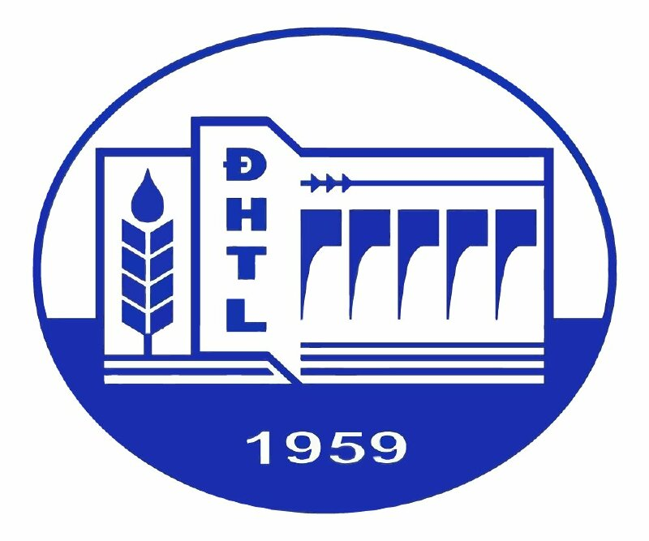

Tạo tài liệu đúng cấu trúc
Dùng title, heading, paragraph, link, image, list và các phần tử nội dung chính.

CSE122Phát triển ứng dụng WebTHỰC HÀNH 01 · 3 TIẾT × 55 PHÚT
HTML · VS Code · Chrome DevTools · Git
Tạo một trang tin CSE122 News bằng HTML thuần, chạy thử trên máy tính, kiểm tra nội dung trong DevTools và lưu tiến độ bằng Git.
SAU BUỔI HỌC
Dùng title, heading, paragraph, link, image, list và các phần tử nội dung chính.
Mở trang qua local server, quan sát phần tử và tìm liên kết hoặc hình ảnh bị lỗi.
Kiểm tra trạng thái, stage thay đổi và commit trang HTML.
TIẾT 1 · GIỚI THIỆU VÀ DEMO
html bao toàn tài liệu; head chứa metadata và tiêu đề tab; body chứa nội dung hiển thị.
header, main, article và footer giúp chia nội dung theo ý nghĩa. h1–h3, p, a, img, ul và li trình bày tin và điều hướng.
Quan sát ví dụ nhỏ trong demo, rồi xem nội dung HTML tương ứng trên trình duyệt.
Mở CSE122 News demo →index.html.python -m http.server 5500.http://localhost:5500 trong Chrome.git status, git add index.html, git commit -m "Create news homepage".Nếu Python chưa có, có thể mở index.html trực tiếp; local server được khuyến nghị để làm quen với quy trình Web.
TIẾT 2 · TỰ THỰC HÀNH
starter trong VS Code. Điền tiêu đề trang, một h1 và đoạn giới thiệu vào các vị trí TODO.article. Mỗi bài có heading, đoạn tóm tắt và ảnh. Thêm đường dẫn từ danh sách điều hướng đến từng bài.git init (nếu cần), git status, git add index.html assets và git commit -m "Build first news page".GitHub là tùy chọn. Không đưa thông tin đăng nhập hoặc token vào repository.
Bắt đầu từ mã HTML có TODO, hoặc đối chiếu với phiên bản hoàn chỉnh sau khi đã tự làm.
TIẾT 3 · MINI-PROJECT
Tiếp tục phát triển trang tin của mình. Có thể dùng starter hoặc tạo project mới. Ưu tiên hoàn thành nội dung cốt lõi rồi kiểm tra lại trên trình duyệt.
header, main, article, footer.KẾT QUẢ MONG ĐỢI
Trình duyệt hiển thị một trang CSE122 News có điều hướng, tối thiểu ba bài viết, tiêu đề, tóm tắt, ảnh và footer. Không cần CSS, JavaScript, backend hay cơ sở dữ liệu.
Starter có TODO chưa hoàn thành nhưng vẫn mở được. Sample hoàn chỉnh có thể chạy độc lập từ thư mục đã giải nén.
doctype, lang="vi", charset UTF-8, title, head và body.alt.